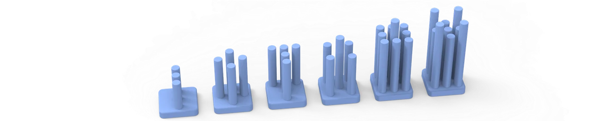
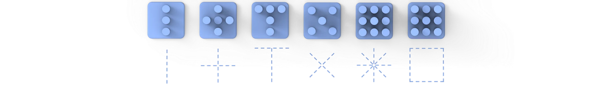
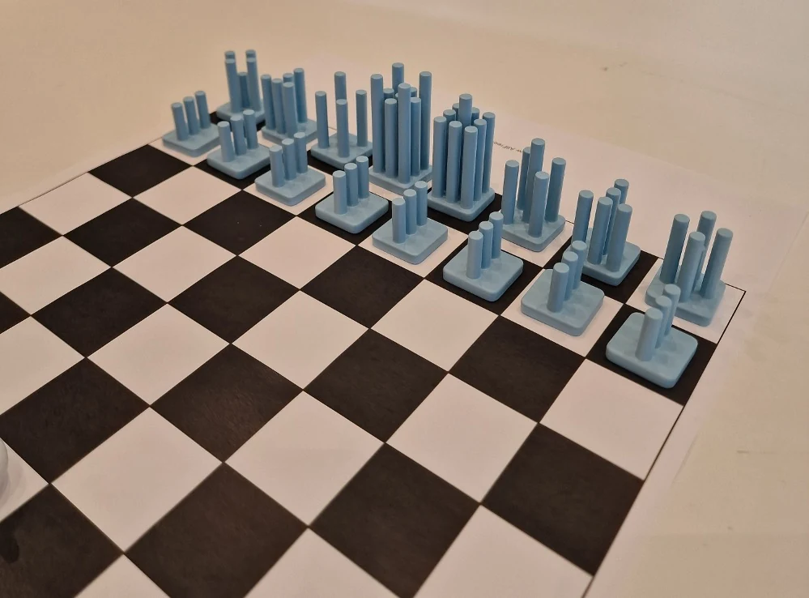

Chess Pieces
A two-week group form study translating chess movement into a family of physical pieces. I focused on 3D modeling and visualization, helping the team compare the forms and communicate the complete set.

- Role
- 3D modeling and visualization
- Team
- 4 people · 2023
- Duration
- 2 weeks
- Tools
- Autodesk Alias and KeyShot
Making the rules visible
The brief was to create a unique chess set that still communicates the traditional rules. Our group used vertical rods as a shared base, changing their height, count and direction to express movement and hierarchy.
The first direction made the pieces feel related, but their rank needed to be clearer. Comparing the forms side by side helped us refine the differences while keeping the set coherent.
Swipe across each diagram to see all six pieces.
- Pawn
- Rook
- Knight
- Bishop
- Queen
- King


From model to prototype
I worked on the 3D models and visualizations to help the group compare the pieces as a system. The team then used 3D printing to take the forms off the screen and compare their scale and proportions on a board.
The painted prototypes brought the height variations and shared base into a physical setting, giving us another way to judge the hierarchy across the set.

The result
The final concept uses one repeated element to connect the pieces, with differences in height and arrangement expressing their roles. KeyShot renders show the set in context and make the relationships between form, material and lighting easier to assess.
What I learned
I learned to develop a family of forms rather than judge each piece on its own. Small changes in height, repetition and direction can make the set feel related while giving each piece a distinct role. Moving between models, prototypes and renders helped me compare those relationships.
- Skills I developed
- Translating an abstract rule system into physical form.
- Developing a coherent product family and visible hierarchy.
- Communicating a group concept through modeling and visualization.
- Tools & methods
- Autodesk Alias for 3D modeling.
- KeyShot for materials, lighting and context renders.
- 3D-printed prototypes and painted form comparisons.